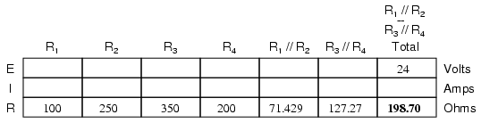
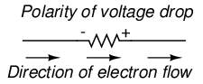
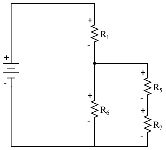

With simple series circuits, all components are connected end-to-end to form only one path for electrons to flow through the circuit:
With simple parallel circuits, all components are connected between the same two sets of electrically common points, creating multiple paths for electrons to flow from one end of the battery to the other:

With each of these two basic circuit configurations, we have specific sets of rules describing voltage, current, and resistance relationships.
However, if circuit components are series-connected in some parts and parallel in others, we won't be able to apply a single set of rules to every part of that circuit. Instead, we will have to identify which parts of that circuit are series and which parts are parallel, then selectively apply series and parallel rules as necessary to determine what is happening. Take the following circuit, for instance:
This circuit is neither simple series nor simple parallel. Rather, it contains elements of both. The current exits the bottom of the battery, splits up to travel through R3 and R4, rejoins, then splits up again to travel through R1 and R2, then rejoins again to return to the top of the battery. There exists more than one path for current to travel (not series), yet there are more than two sets of electrically common points in the circuit (not parallel).
Because the circuit is a combination of both series and parallel, we cannot apply the rules for voltage, current, and resistance "across the table" to begin analysis like we could when the circuits were one way or the other. For instance, if the above circuit were simple series, we could just add up R1 through R4 to arrive at a total resistance, solve for total current, and then solve for all voltage drops. Likewise, if the above circuit were simple parallel, we could just solve for branch currents, add up branch currents to figure the total current, and then calculate total resistance from total voltage and total current. However, this circuit's solution will be more complex.
The table will still help us manage the different values for series-parallel combination circuits, but we'll have to be careful how and where we apply the different rules for series and parallel. Ohm's Law, of course, still works just the same for determining values within a vertical column in the table.
If we are able to identify which parts of the circuit are series and which parts are parallel, we can analyze it in stages, approaching each part one at a time, using the appropriate rules to determine the relationships of voltage, current, and resistance. The rest of this chapter will be devoted to showing you techniques for doing this.
The goal of series-parallel resistor circuit analysis is to be able to determine all voltage drops, currents, and power dissipations in a circuit. The general strategy to accomplish this goal is as follows:
This may sound like an intimidating process, but its much easier understood through example than through description.
In the example circuit above, R1 and R2 are connected in a simple parallel arrangement, as are R3 and R4. Having been identified, these sections need to be converted into equivalent single resistors, and the circuit re-drawn:
The double slash (//) symbols represent "parallel" to show that the equivalent resistor values were calculated using the 1/(1/R) formula. The 71.429 Ω resistor at the top of the circuit is the equivalent of R1 and R2 in parallel with each other. The 127.27 Ω resistor at the bottom is the equivalent of R3 and R4 in parallel with each other.
Our table can be expanded to include these resistor equivalents in their own columns:
It should be apparent now that the circuit has been reduced to a simple series configuration with only two (equivalent) resistances. The final step in reduction is to add these two resistances to come up with a total circuit resistance. When we add those two equivalent resistances, we get a resistance of 198.70 Ω. Now, we can re-draw the circuit as a single equivalent resistance and add the total resistance figure to the rightmost column of our table. Note that the "Total" column has been relabeled (R1//R2--R3//R4) to indicate how it relates electrically to the other columns of figures. The "--" symbol is used here to represent "series," just as the "//" symbol is used to represent "parallel."

Now, total circuit current can be determined by applying Ohm's Law (I=E/R) to the "Total" column in the table:
Back to our equivalent circuit drawing, our total current value of 120.78 milliamps is shown as the only current here:
Now we start to work backwards in our progression of circuit re-drawings to the original configuration. The next step is to go to the circuit where R1//R2 and R3//R4 are in series:
Since R1//R2 and R3//R4 are in series with each other, the current through those two sets of equivalent resistances must be the same. Furthermore, the current through them must be the same as the total current, so we can fill in our table with the appropriate current values, simply copying the current figure from the Total column to the R1//R2 and R3//R4 columns:
Now, knowing the current through the equivalent resistors R1//R2 and R3//R4, we can apply Ohm's Law (E=IR) to the two right vertical columns to find voltage drops across them:
Because we know R1//R2 and R3//R4 are parallel resistor equivalents, and we know that voltage drops in parallel circuits are the same, we can transfer the respective voltage drops to the appropriate columns on the table for those individual resistors. In other words, we take another step backwards in our drawing sequence to the original configuration, and complete the table accordingly:

Finally, the original section of the table (columns R1 through R4) is complete with enough values to finish. Applying Ohm's Law to the remaining vertical columns (I=E/R), we can determine the currents through R1, R2, R3, and R4 individually:
Having found all voltage and current values for this circuit, we can show those values in the schematic diagram as such:
As a final check of our work, we can see if the calculated current values add up as they should to the total. Since R1 and R2 are in parallel, their combined currents should add up to the total of 120.78 mA. Likewise, since R3 and R4 are in parallel, their combined currents should also add up to the total of 120.78 mA. You can check for yourself to verify that these figures do add up as expected.
A computer simulation can also be used to verify the accuracy of these figures. The following SPICE analysis will show all resistor voltages and currents (note the current-sensing vi1, vi2, . . . "dummy" voltage sources in series with each resistor in the netlist, necessary for the SPICE computer program to track current through each path). These voltage sources will be set to have values of zero volts each so they will not affect the circuit in any way.

series-parallel circuit v1 1 0 vi1 1 2 dc 0 vi2 1 3 dc 0 r1 2 4 100 r2 3 4 250 vi3 4 5 dc 0 vi4 4 6 dc 0 r3 5 0 350 r4 6 0 200 .dc v1 24 24 1 .print dc v(2,4) v(3,4) v(5,0) v(6,0) .print dc i(vi1) i(vi2) i(vi3) i(vi4) .end
I've annotated SPICE's output figures to make them more readable, denoting which voltage and current figures belong to which resistors.
v1 v(2,4) v(3,4) v(5) v(6) 2.400E+01 8.627E+00 8.627E+00 1.537E+01 1.537E+01 Battery R1 voltage R2 voltage R3 voltage R4 voltage voltage
v1 i(vi1) i(vi2) i(vi3) i(vi4) 2.400E+01 8.627E-02 3.451E-02 4.392E-02 7.686E-02 Battery R1 current R2 current R3 current R4 current voltage
As you can see, all the figures do agree with the our calculated values.
Typically, complex circuits are not arranged in nice, neat, clean schematic diagrams for us to follow. They are often drawn in such a way that makes it difficult to follow which components are in series and which are in parallel with each other. The purpose of this section is to show you a method useful for re-drawing circuit schematics in a neat and orderly fashion. Like the stage-reduction strategy for solving series-parallel combination circuits, it is a method easier demonstrated than described.
Let's start with the following (convoluted) circuit diagram. Perhaps this diagram was originally drawn this way by a technician or engineer. Perhaps it was sketched as someone traced the wires and connections of a real circuit. In any case, here it is in all its ugliness:
With electric circuits and circuit diagrams, the length and routing of wire connecting components in a circuit matters little. (Actually, in some AC circuits it becomes critical, and very long wire lengths can contribute unwanted resistance to both AC and DC circuits, but in most cases wire length is irrelevant.) What this means for us is that we can lengthen, shrink, and/or bend connecting wires without affecting the operation of our circuit.
The strategy I have found easiest to apply is to start by tracing the current from one terminal of the battery around to the other terminal, following the loop of components closest to the battery and ignoring all other wires and components for the time being. While tracing the path of the loop, mark each resistor with the appropriate polarity for voltage drop.
In this case, I'll begin my tracing of this circuit at the negative terminal of the battery and finish at the positive terminal, in the same general direction as the electrons would flow. When tracing this direction, I will mark each resistor with the polarity of negative on the entering side and positive on the exiting side, for that is how the actual polarity will be as electrons (negative in charge) enter and exit a resistor:

Any components encountered along this short loop are drawn vertically in order:

Now, proceed to trace any loops of components connected around components that were just traced. In this case, there's a loop around R1 formed by R2, and another loop around R3 formed by R4:

Tracing those loops, I draw R2 and R4 in parallel with R1 and R3 (respectively) on the vertical diagram. Noting the polarity of voltage drops across R3 and R1, I mark R4 and R2 likewise:

Now we have a circuit that is very easily understood and analyzed. In this case, it is identical to the four-resistor series-parallel configuration we examined earlier in the chapter.
Let's look at another example, even uglier than the one before:
The first loop I'll trace is from the negative (-) side of the battery, through R6, through R1, and back to the positive (+) end of the battery:
Re-drawing vertically and keeping track of voltage drop polarities along the way, our equivalent circuit starts out looking like this:
Next, we can proceed to follow the next loop around one of the traced resistors (R6), in this case, the loop formed by R5 and R7. As before, we start at the negative end of R6 and proceed to the positive end of R6, marking voltage drop polarities across R7 and R5 as we go:
Now we add the R5--R7 loop to the vertical drawing. Notice how the voltage drop polarities across R7 and R5 correspond with that of R6, and how this is the same as what we found tracing R7 and R5 in the original circuit:

We repeat the process again, identifying and tracing another loop around an already-traced resistor. In this case, the R3--R4 loop around R5 looks like a good loop to trace next:
Adding the R3--R4 loop to the vertical drawing, marking the correct polarities as well:
With only one remaining resistor left to trace, then next step is obvious: trace the loop formed by R2 around R3:
Adding R2 to the vertical drawing, and we're finished! The result is a diagram that's very easy to understand compared to the original:
This simplified layout greatly eases the task of determining where to start and how to proceed in reducing the circuit down to a single equivalent (total) resistance. Notice how the circuit has been re-drawn, all we have to do is start from the right-hand side and work our way left, reducing simple-series and simple-parallel resistor combinations one group at a time until we're done.
In this particular case, we would start with the simple parallel combination of R2 and R3, reducing it to a single resistance. Then, we would take that equivalent resistance (R2//R3) and the one in series with it (R4), reducing them to another equivalent resistance (R2//R3--R4). Next, we would proceed to calculate the parallel equivalent of that resistance (R2//R3--R4) with R5, then in series with R7, then in parallel with R6, then in series with R1 to give us a grand total resistance for the circuit as a whole.
From there we could calculate total current from total voltage and total resistance (I=E/R), then "expand" the circuit back into its original form one stage at a time, distributing the appropriate values of voltage and current to the resistances as we go.
"I consider that I understand an equation when I can predict the properties of its solutions, without actually solving it."
P.A.M Dirac, physicist
There is a lot of truth to that quote from Dirac. With a little modification, I can extend his wisdom to electric circuits by saying, "I consider that I understand a circuit when I can predict the approximate effects of various changes made to it without actually performing any calculations."
At the end of the series and parallel circuits chapter, we briefly considered how circuits could be analyzed in a qualitative rather than quantitative manner. Building this skill is an important step towards becoming a proficient troubleshooter of electric circuits. Once you have a thorough understanding of how any particular failure will affect a circuit (i.e. you don't have to perform any arithmetic to predict the results), it will be much easier to work the other way around: pinpointing the source of trouble by assessing how a circuit is behaving.
Also shown at the end of the series and parallel circuits chapter was how the table method works just as well for aiding failure analysis as it does for the analysis of healthy circuits. We may take this technique one step further and adapt it for total qualitative analysis. By "qualitative" I mean working with symbols representing "increase," "decrease," and "same" instead of precise numerical figures. We can still use the principles of series and parallel circuits, and the concepts of Ohm's Law, we'll just use symbolic qualities instead of numerical quantities. By doing this, we can gain more of an intuitive "feel" for how circuits work rather than leaning on abstract equations, attaining Dirac's definition of "understanding."
Enough talk. Let's try this technique on a real circuit example and see how it works:
This is the first "convoluted" circuit we straightened out for analysis in the last section. Since you already know how this particular circuit reduces to series and parallel sections, I'll skip the process and go straight to the final form:
R3 and R4 are in parallel with each other; so are R1 and R2. The parallel equivalents of R3//R4 and R1//R2 are in series with each other. Expressed in symbolic form, the total resistance for this circuit is as follows:
RTotal = (R1//R2)--(R3//R4)
First, we need to formulate a table with all the necessary rows and columns for this circuit:
Next, we need a failure scenario. Let's suppose that resistor R2 were to fail shorted. We will assume that all other components maintain their original values. Because we'll be analyzing this circuit qualitatively rather than quantitatively, we won't be inserting any real numbers into the table. For any quantity unchanged after the component failure, we'll use the word "same" to represent "no change from before." For any quantity that has changed as a result of the failure, we'll use a down arrow for "decrease" and an up arrow for "increase." As usual, we start by filling in the spaces of the table for individual resistances and total voltage, our "given" values:
The only "given" value different from the normal state of the circuit is R2, which we said was failed shorted (abnormally low resistance). All other initial values are the same as they were before, as represented by the "same" entries. All we have to do now is work through the familiar Ohm's Law and series-parallel principles to determine what will happen to all the other circuit values.
First, we need to determine what happens to the resistances of parallel subsections R1//R2 and R3//R4. If neither R3 nor R4 have changed in resistance value, then neither will their parallel combination. However, since the resistance of R2 has decreased while R1 has stayed the same, their parallel combination must decrease in resistance as well:
Now, we need to figure out what happens to the total resistance. This part is easy: when we're dealing with only one component change in the circuit, the change in total resistance will be in the same direction as the change of the failed component. This is not to say that the magnitude of change between individual component and total circuit will be the same, merely the direction of change. In other words, if any single resistor decreases in value, then the total circuit resistance must also decrease, and vice versa. In this case, since R2 is the only failed component, and its resistance has decreased, the total resistance must decrease:
Now we can apply Ohm's Law (qualitatively) to the Total column in the table. Given the fact that total voltage has remained the same and total resistance has decreased, we can conclude that total current must increase (I=E/R).
In case you're not familiar with the qualitative assessment of an equation, it works like this. First, we write the equation as solved for the unknown quantity. In this case, we're trying to solve for current, given voltage and resistance:

Now that our equation is in the proper form, we assess what change (if any) will be experienced by "I," given the change(s) to "E" and "R":
If the denominator of a fraction decreases in value while the numerator stays the same, then the overall value of the fraction must increase:
Therefore, Ohm's Law (I=E/R) tells us that the current (I) will increase. We'll mark this conclusion in our table with an "up" arrow:
With all resistance places filled in the table and all quantities determined in the Total column, we can proceed to determine the other voltages and currents. Knowing that the total resistance in this table was the result of R1//R2 and R3//R4 in series, we know that the value of total current will be the same as that in R1//R2 and R3//R4 (because series components share the same current). Therefore, if total current increased, then current through R1//R2 and R3//R4 must also have increased with the failure of R2:
Fundamentally, what we're doing here with a qualitative usage of Ohm's Law and the rules of series and parallel circuits is no different from what we've done before with numerical figures. In fact, its a lot easier because you don't have to worry about making an arithmetic or calculator keystroke error in a calculation. Instead, you're just focusing on the principles behind the equations. From our table above, we can see that Ohm's Law should be applicable to the R1//R2 and R3//R4 columns. For R3//R4, we figure what happens to the voltage, given an increase in current and no change in resistance. Intuitively, we can see that this must result in an increase in voltage across the parallel combination of R3//R4:
But how do we apply the same Ohm's Law formula (E=IR) to the R1//R2 column, where we have resistance decreasing and current increasing? It's easy to determine if only one variable is changing, as it was with R3//R4, but with two variables moving around and no definite numbers to work with, Ohm's Law isn't going to be much help. However, there is another rule we can apply horizontally to determine what happens to the voltage across R1//R2: the rule for voltage in series circuits. If the voltages across R1//R2 and R3//R4 add up to equal the total (battery) voltage and we know that the R3//R4 voltage has increased while total voltage has stayed the same, then the voltage across R1//R2 must have decreased with the change of R2's resistance value:
Now we're ready to proceed to some new columns in the table. Knowing that R3 and R4 comprise the parallel subsection R3//R4, and knowing that voltage is shared equally between parallel components, the increase in voltage seen across the parallel combination R3//R4 must also be seen across R3 and R4 individually:
The same goes for R1 and R2. The voltage decrease seen across the parallel combination of R1 and R2 will be seen across R1 and R2 individually:
Applying Ohm's Law vertically to those columns with unchanged ("same") resistance values, we can tell what the current will do through those components. Increased voltage across an unchanged resistance leads to increased current. Conversely, decreased voltage across an unchanged resistance leads to decreased current:
Once again we find ourselves in a position where Ohm's Law can't help us: for R2, both voltage and resistance have decreased, but without knowing how much each one has changed, we can't use the I=E/R formula to qualitatively determine the resulting change in current. However, we can still apply the rules of series and parallel circuits horizontally. We know that the current through the R1//R2 parallel combination has increased, and we also know that the current through R1 has decreased. One of the rules of parallel circuits is that total current is equal to the sum of the individual branch currents. In this case, the current through R1//R2 is equal to the current through R1 added to the current through R2. If current through R1//R2 has increased while current through R1 has decreased, current through R2 must have increased:
And with that, our table of qualitative values stands completed. This particular exercise may look laborious due to all the detailed commentary, but the actual process can be performed very quickly with some practice. An important thing to realize here is that the general procedure is little different from quantitative analysis: start with the known values, then proceed to determining total resistance, then total current, then transfer figures of voltage and current as allowed by the rules of series and parallel circuits to the appropriate columns.
A few general rules can be memorized to assist and/or to check your progress when proceeding with such an analysis:
Once again, when building battery/resistor circuits, the student or hobbyist is faced with several different modes of construction. Perhaps the most popular is the solderless breadboard: a platform for constructing temporary circuits by plugging components and wires into a grid of interconnected points. A breadboard appears to be nothing but a plastic frame with hundreds of small holes in it. Underneath each hole, though, is a spring clip which connects to other spring clips beneath other holes. The connection pattern between holes is simple and uniform:
Suppose we wanted to construct the following series-parallel combination circuit on a breadboard:
The recommended way to do so on a breadboard would be to arrange the resistors in approximately the same pattern as seen in the schematic, for ease of relation to the schematic. If 24 volts is required and we only have 6-volt batteries available, four may be connected in series to achieve the same effect:
This is by no means the only way to connect these four resistors together to form the circuit shown in the schematic. Consider this alternative layout:
If greater permanence is desired without resorting to soldering or wire-wrapping, one could choose to construct this circuit on a terminal strip (also called a barrier strip, or terminal block). In this method, components and wires are secured by mechanical tension underneath screws or heavy clips attached to small metal bars. The metal bars, in turn, are mounted on a nonconducting body to keep them electrically isolated from each other.
Building a circuit with components secured to a terminal strip isn't as easy as plugging components into a breadboard, principally because the components cannot be physically arranged to resemble the schematic layout. Instead, the builder must understand how to "bend" the schematic's representation into the real-world layout of the strip. Consider one example of how the same four-resistor circuit could be built on a terminal strip:
Another terminal strip layout, simpler to understand and relate to the schematic, involves anchoring parallel resistors (R1//R2 and R3//R4) to the same two terminal points on the strip like this:

Building more complex circuits on a terminal strip involves the same spatial-reasoning skills, but of course requires greater care and planning. Take for instance this complex circuit, represented in schematic form:
The terminal strip used in the prior example barely has enough terminals to mount all seven resistors required for this circuit! It will be a challenge to determine all the necessary wire connections between resistors, but with patience it can be done. First, begin by installing and labeling all resistors on the strip. The original schematic diagram will be shown next to the terminal strip circuit for reference:

Next, begin connecting components together wire by wire as shown in the schematic. Over-draw connecting lines in the schematic to indicate completion in the real circuit. Watch this sequence of illustrations as each individual wire is identified in the schematic, then added to the real circuit:

Although there are minor variations possible with this terminal strip circuit, the choice of connections shown in this example sequence is both electrically accurate (electrically identical to the schematic diagram) and carries the additional benefit of not burdening any one screw terminal on the strip with more than two wire ends, a good practice in any terminal strip circuit.
An example of a "variant" wire connection might be the very last wire added (step 11), which I placed between the left terminal of R2 and the left terminal of R3. This last wire completed the parallel connection between R2 and R3 in the circuit. However, I could have placed this wire instead between the left terminal of R2 and the right terminal of R1, since the right terminal of R1 is already connected to the left terminal of R3 (having been placed there in step 9) and so is electrically common with that one point. Doing this, though, would have resulted in three wires secured to the right terminal of R1 instead of two, which is a faux pax in terminal strip etiquette. Would the circuit have worked this way? Certainly! It's just that more than two wires secured at a single terminal makes for a "messy" connection: one that is aesthetically unpleasing and may place undue stress on the screw terminal.
Another variation would be to reverse the terminal connections for resistor R7. As shown in the last diagram, the voltage polarity across R7 is negative on the left and positive on the right (- , +), whereas all the other resistor polarities are positive on the left and negative on the right (+ , -):
While this poses no electrical problem, it might cause confusion for anyone measuring resistor voltage drops with a voltmeter, especially an analog voltmeter which will "peg" downscale when subjected to a voltage of the wrong polarity. For the sake of consistency, it might be wise to arrange all wire connections so that all resistor voltage drop polarities are the same, like this:
Though electrons do not care about such consistency in component layout, people do. This illustrates an important aspect of any engineering endeavor: the human factor. Whenever a design may be modified for easier comprehension and/or easier maintenance -- with no sacrifice of functional performance -- it should be done so.
Contributors to this chapter are listed in chronological order of their contributions, from most recent to first. See Appendix 2 (Contributor List) for dates and contact information.
Tony Armstrong (January 23, 2003): Suggested reversing polarity on resistor R7 in last terminal strip circuit.
Jason Starck (June 2000): HTML document formatting, which led to a much better-looking second edition.
Ron LaPlante (October 1998): helped create "table" method of series and parallel circuit analysis.
Lessons In Electric Circuits copyright (C) 2000-2023 Tony R. Kuphaldt, under the terms and conditions of the CC BY License.